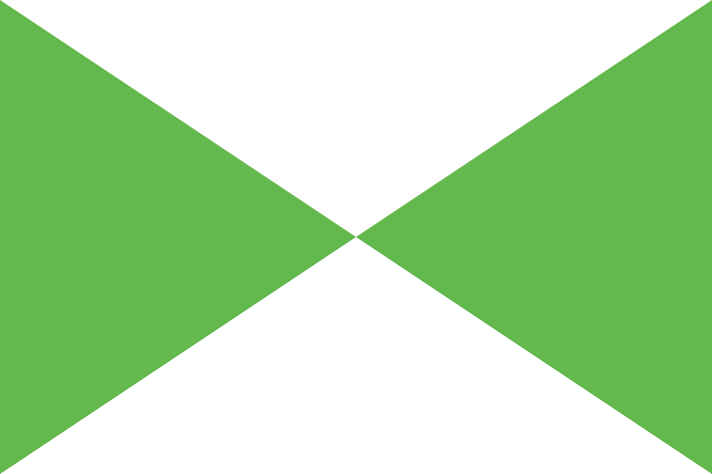

Kogane
Flag of Kogane
Kogane is an island nation occupying the kogane Archipelago in Laumeri. Historically a maritime trading power with diplomatic missions across the world, Kogane withdrew from traditional international diplomacy after the Nine Knot War.
History
Pre-Enchantment
Kogane shipbuilders and captains founded Delsin Station as a repair and transport hub.
The Nine Knot Line, a government-owned ferry and mail service, ran between Kogane, Delsin, and Ikara, and Stolmont.
Nine Knot War and Envoy Period
See: Nine Knot War
After the war, Kogane withdrew all overseas diplomatic missions and banned foreign ships from its ports. Private firms, most owned by royal houses, were given control of embassy buildings.
Government and Politics
Kogane is a parliamentary republic in which royal houses serve as membership markers that confer no power. Foreign affairs are governed by the Ministry of Exterior Houses, which charters and supervises envoys, and the Ministry of Foreign Correspondence. The MFC was effectively shuttered during the Envoy Period.
Each island has its own civil administration which handles local services. Representative divisions are designated to create equal population and are not coterminous with islands.
Coalitions in parliament are fluid. Common political issues include cooperation with IPRO, envoy autonomy, and arts funding. Maritime traditionalism is effectively a defunct ideology in Kogane following the disastrous Nine Knot War, and the Wake Society is explicitly banned as a political party.
Notable Envoys
Military
The Coastal Defense Service is a small fleet of ships and patrol aircraft tasks with keeping foreign ships away from the archipelago.
Envoy security is hired from local firms. In cases of extreme danger (such as during the Black Air Conflict), CDS Marines may be sent to protect or evacuate envoys.